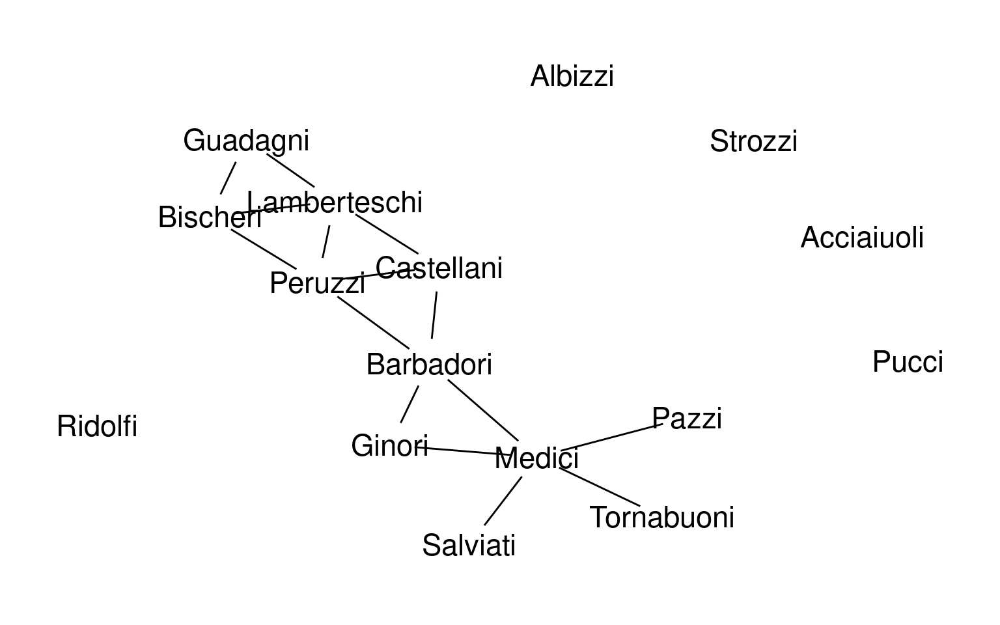
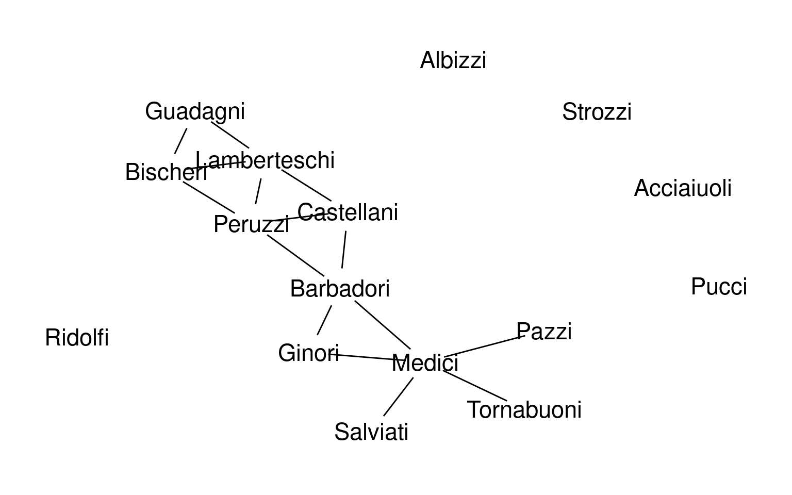
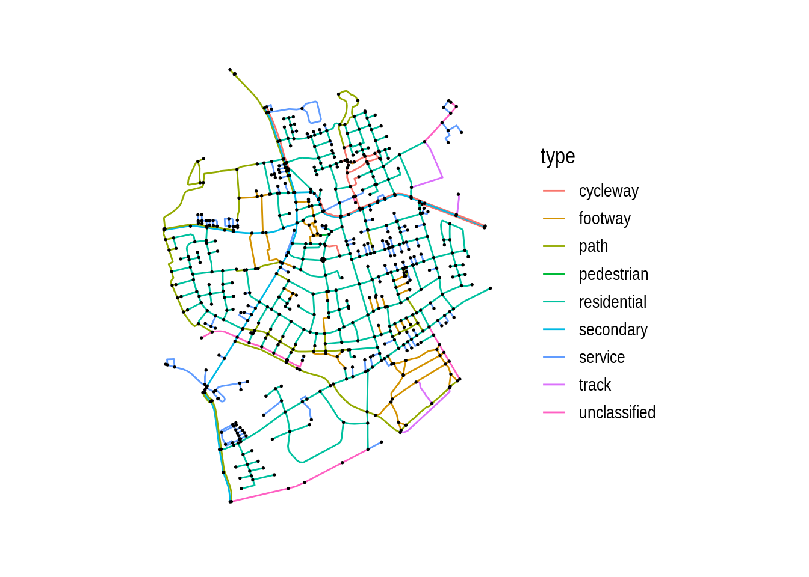
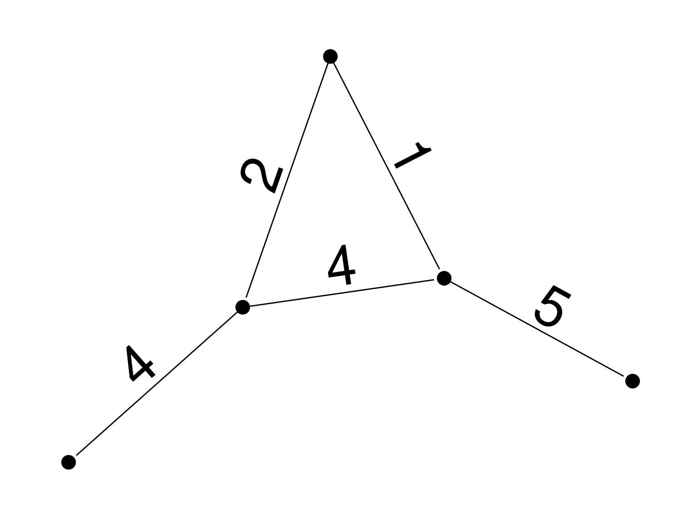
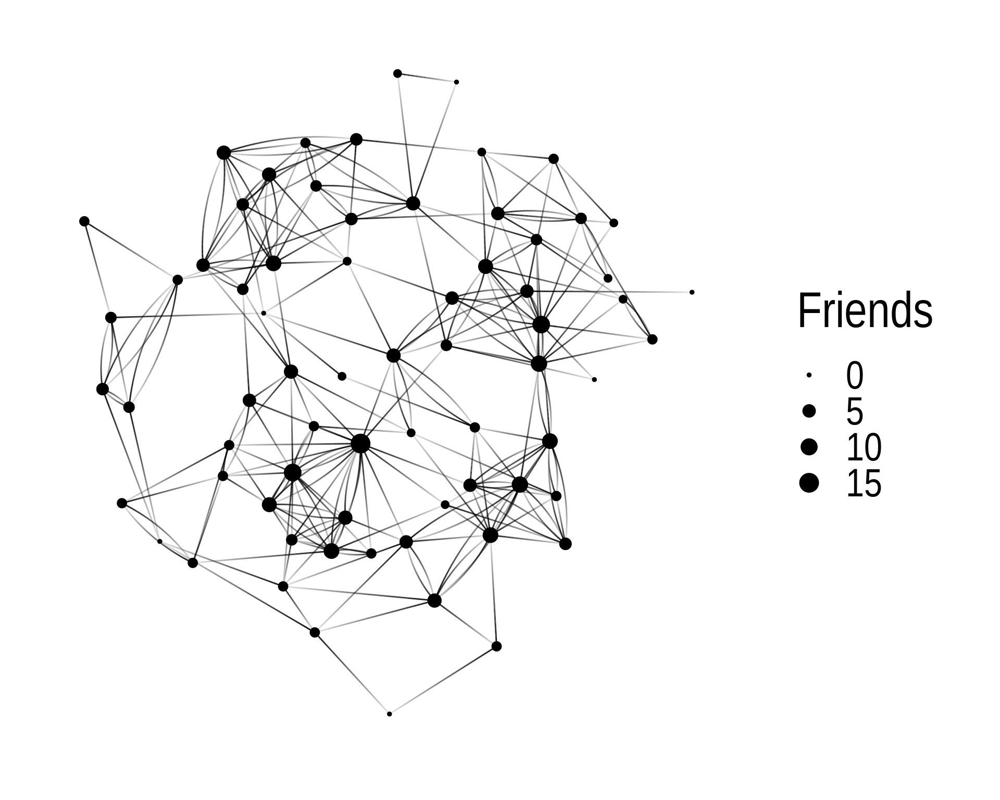
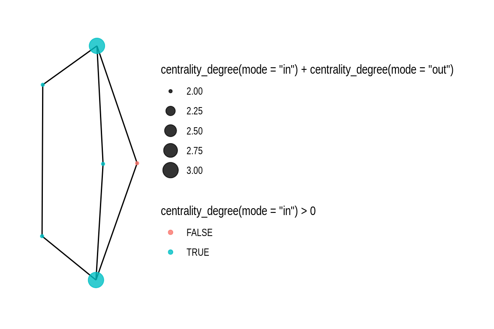
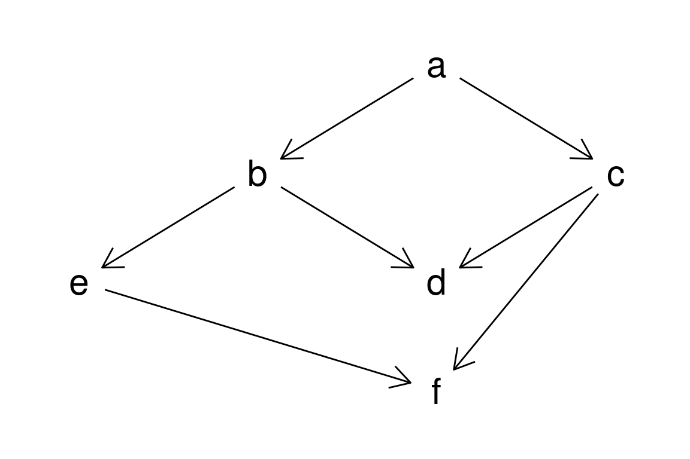
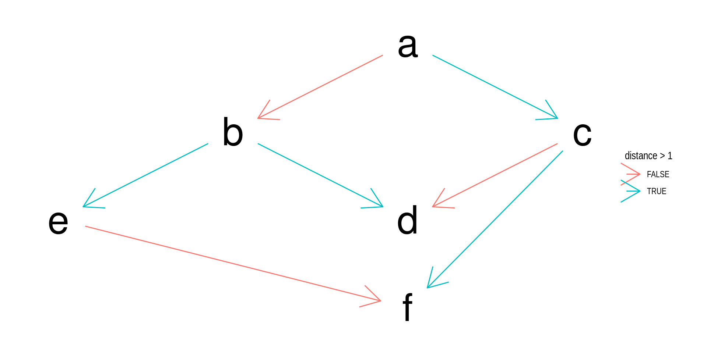
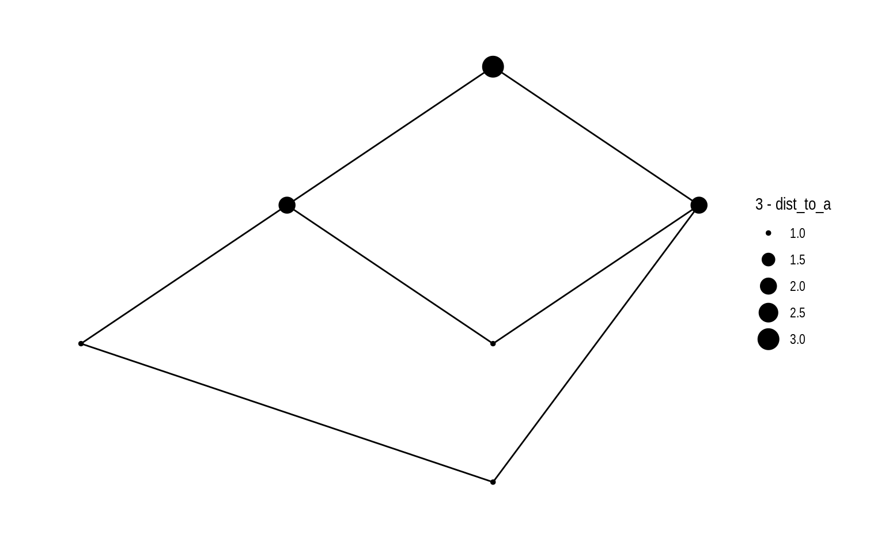

Set of objects called the nodes: N = (Chicago, Detroit, Miami, NYC)
Set of pairs of nodes, called edges: E = [ (Chicago,Detroit), (Miami,NYC), (NYC,Chicago)]
Adjacency Matrix A:
\[ A = \begin{pmatrix} 0 & 1 & 0 & 1\\ 1 & 0 & 0 & 0 \\ 0 & 0 & 0 & 1 \\ 1 & 0 & 1 & 0 \end{pmatrix} \]
weights which represent the strength of the connection

R are tidygraph and igraphtidygraph is a tidy wrapper around igraph
ggraph is a ggplot style graph visualization packageigraph can do more things than tidygraphtbl_graph creates a graph from set of nodes and edgesnodes = tibble("nodes" = letters[1:6])
edges = tibble("from" = c(1,1,2,3,2,3,5),"to" = c(2,3,4,4,5,6,6))
gr2= tbl_graph(nodes = nodes,edges = edges,directed = TRUE)
nodes# A tibble: 6 × 1
nodes
<chr>
1 a
2 b
3 c
4 d
5 e
6 f # A tibble: 7 × 2
from to
<dbl> <dbl>
1 1 2
2 1 3
3 2 4
4 3 4
5 2 5
6 3 6
7 5 6as_tbl_graph creates a graph from tibble of edgestbl_graph from nodes and edgesnodes = tibble("nodes" = letters[1:6])
edges = tibble("from" = c(1,1,2,3,2,3,5),"to" = c(2,3,4,4,5,6,6))
gr1 = as_tbl_graph(edges,directed = TRUE)
gr2= tbl_graph(nodes = nodes,edges = edges,directed = TRUE)
gr1# A tbl_graph: 6 nodes and 7 edges
#
# A directed acyclic simple graph with 1 component
#
# Node Data: 6 × 0 (active)
#
# Edge Data: 7 × 2
from to
<int> <int>
1 1 2
2 1 3
3 2 5
# ℹ 4 more rowsnodes = tibble("nodes" = letters[1:6])
edges = tibble("from" = c(1,1,2,3,2,3,5),"to" = c(2,3,4,4,5,6,6))
gr1 = as_tbl_graph(edges,directed = TRUE)
gr2= tbl_graph(nodes = nodes,edges = edges,directed = TRUE)
gr2# A tbl_graph: 6 nodes and 7 edges
#
# A directed acyclic simple graph with 1 component
#
# Node Data: 6 × 1 (active)
nodes
<chr>
1 a
2 b
3 c
4 d
5 e
6 f
#
# Edge Data: 7 × 2
from to
<int> <int>
1 1 2
2 1 3
3 2 4
# ℹ 4 more rowsggraph to visualize graphsas_tbl_graph converts from igraph format to tidy format
IGRAPH bc7fb16 UN-- 16 20 --
+ attr: name (v/c), wealth (v/n), #priors (v/n), #ties (v/n)
+ edges from bc7fb16 (vertex names):
[1] Acciaiuoli--Medici Albizzi --Ginori Albizzi --Guadagni
[4] Albizzi --Medici Barbadori --Castellani Barbadori --Medici
[7] Bischeri --Guadagni Bischeri --Peruzzi Bischeri --Strozzi
[10] Castellani--Peruzzi Castellani--Strozzi Guadagni --Lamberteschi
[13] Guadagni --Tornabuoni Medici --Ridolfi Medici --Salviati
[16] Medici --Tornabuoni Pazzi --Salviati Peruzzi --Strozzi
[19] Ridolfi --Strozzi Ridolfi --Tornabuoni as_tbl_graph also converts from igraph format to tidy format
# A tbl_graph: 16 nodes and 20 edges
#
# An undirected simple graph with 2 components
#
# Node Data: 16 × 4 (active)
name wealth `#priors` `#ties`
<chr> <dbl> <dbl> <dbl>
1 Acciaiuoli 10 53 2
2 Albizzi 36 65 3
3 Barbadori 55 0 14
4 Bischeri 44 12 9
5 Castellani 20 22 18
6 Ginori 32 0 9
7 Guadagni 8 21 14
8 Lamberteschi 42 0 14
9 Medici 103 53 54
10 Pazzi 48 0 7
11 Peruzzi 49 42 32
12 Pucci 3 0 1
13 Ridolfi 27 38 4
14 Salviati 10 35 5
15 Strozzi 146 74 29
16 Tornabuoni 48 0 7
#
# Edge Data: 20 × 2
from to
<int> <int>
1 1 9
2 2 6
3 2 7
# ℹ 17 more rowsggraphggraph(graph,layout="auto",...)geom_node_*(point,range,text,label,....)geom_edge_*(link,sf,hive,...)aes to plot other datakk and stress pretends the edges are springs, finds equilibriumdendrogram draws a family tree (note duplicates)geom_node_*point, circle, text most commonpoint: alpha, color, fill, shape, sizelabelgeom_node_*point, circle, text most commonpoint: alpha, color, fill, shape, sizelabel
geom_edge_*geom_edge_link family commonedge_color/width/linetype arrowlabel, start/end_capgeom_edge_*geom_edge_link family commonedge_color/width/linetype arrowlabel, start/end_cap
tidy manipulation requires that you activate either edges or nodesnodes active by defaulttidy manipulation requires that you activate either edges or nodesactivate to change the edges# A tbl_graph: 6 nodes and 7 edges
#
# A directed acyclic simple graph with 1 component
#
# Edge Data: 7 × 3 (active)
from to distance
<int> <int> <int>
1 1 2 1
2 1 3 2
3 2 4 2
4 3 4 1
5 2 5 3
6 3 6 3
7 5 6 1
#
# Node Data: 6 × 1
nodes
<chr>
1 a
2 b
3 c
# ℹ 3 more rowstidy manipulation requires that you activate either edges or nodesactivate to change the edgestidy manipulation requires that you activate either edges or nodesactivate to change the edges
centrality_* tidygraph centrality functionsnode_* and edge_*- example node_distance_tocentrality_* tidygraph centrality functionsnode_* and edge_*- example node_distance_to
centrality_* tidygraph centrality functionsnode_* and edge_*- example node_distance_tograph_* and to_* functionswith_graphigraph functions: good fraction of most important network science statsPlease fill out the following google form after the meeting or watching the video: